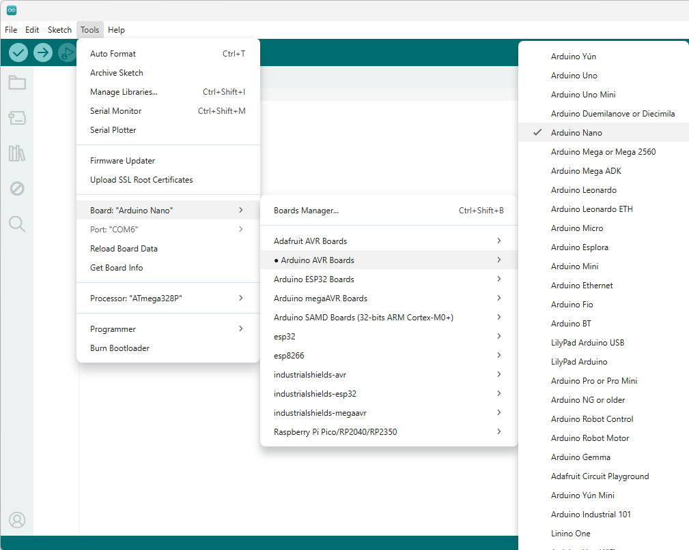
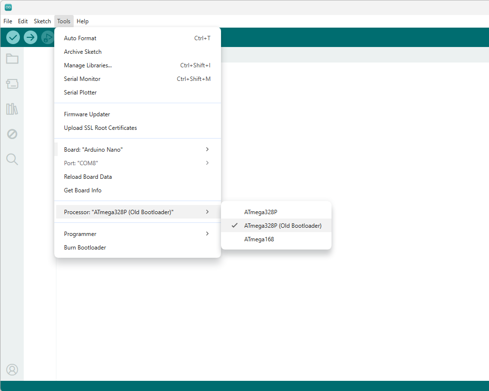

Arduino Nano es un módulo que integra el dispositivo Atmel AT328p para obtener una plataforma de desarrollo compatible con Arduino.
Antes de comenzar a programar se debe configurar el entorno Arduino® para poder compilar y cargar los programas adecuadamente al dispositivo Arduino Nano.
Abrir el menú
Tools --> Board: --> Arduino AVR Boards y seleccionar la placa
Arduino Nano

Para programar algunas versiones de la placa Arduino Nano es necesario cambiar la selección del procesador por la opción
ATmega328p (Old Bootloader)
